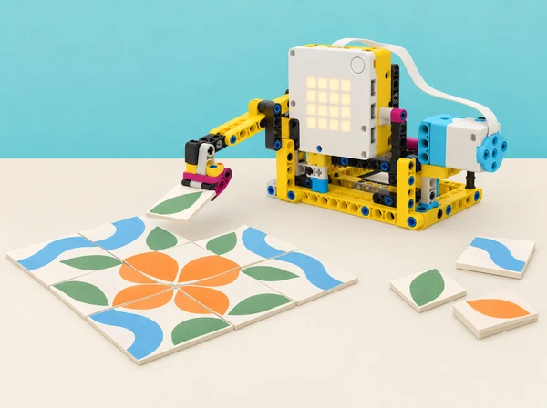

Una associació cultural de la comarca vol preparar per a la fira escolar un mosaic modular inspirat en séquies, bancals i formes vegetals de l’horta. Cada equip dissenya una petita màquina de taula que repeteix un moviment amb un motor SPIKE Prime: pot desplaçar un indicador, fer avançar una fitxa gran o assenyalar una casella cada vegada. El codi ha de produir un patró recognoscible, comptar les repeticions i acabar en el moment previst. No es tracta de reproduir una tècnica artesanal ni d’automatitzar treball manual real; és una maqueta computacional i artística.
Aquesta situació adapta la unitat 4 de Course 1, Doing Reps with Loops, de LEGO Education Introduction to Python Programming. La progressió tracta bucles comptats en Warm Up Loop with Leo, registre de repeticions i compte arrere en Counting Reps with Leo, ritme en Dance Loop with Coach, selecció condicional de moviments en Setting Conditions for Yoga, comportament persistent en Infinite Moves, creació de model/algoritme repetitiu en Leading the Team with Loops i millora amb feedback en Ideas for Leading Your Team with Loops. Es canvia l’exercici corporal per un procés de composició de mosaic, conservant els conceptes de control i seqüència.
Iteració: una volta del cos del bucle. Comptador: variable que registra quantes voltes o elements s’han processat. Bucle comptat: repetició amb una quantitat coneguda d’iteracions. Condició: expressió que pot resultar vertadera o falsa. Bucle infinit: repetició que no acaba mentre no s’interrompa. Patró: ordre que es reconeix perquè alguns elements es repeteixen.
# Exemple de Python general: genera una llista de passos previsibles
for index in range(4):
print("col·loca la fitxa", index + 1)El codi sols imprimeix text i no controla SPIKE Prime. Per a moviment, pausa, matriu del hub i parada, adapteu la sintaxi a l’API Python de l’app instal·lada; les versions de SPIKE poden diferir. Confirmeu ports i velocitats amb el model immobilitzat abans d’executar-lo a la pista.
Un SPIKE Prime 45678 per equip, hub carregat, un motor mitjà i peces Technic per a un mecanisme de baixa força i recorregut curt, plataforma estable, fitxes grans planes de cartó o paper, quadrícula impresa, retoladors, cinta de paper, regle, diari d’enginyeria i dispositiu amb SPIKE Python i consola. El motor només mou un indicador o empeny una fitxa lleugera per una canaleta oberta; no s’usa eina de tall, pinça de força ni material menut. El mural final es pot completar amb peces de paper sense mecanisme.
Definiu límits de velocitat i angle, topalls mecànics i espai segur perquè l’accessori no caiga de la taula. Cada equip tria un mòdul gràfic senzill (per exemple, alternança de dues formes o seqüència de tres colors) i una forma d’entrada manual. Prepareu codi de demostració amb un `for` curt, un comptador, una condició i un exemple de bucle infinit només per a lectura en paper. Expliqueu que qualsevol codi que continua sense pausa pot congelar l’app o repetir moviment: la demostració d’infinit es traça mentalment o s’executa sense motors, i la professora manté accés a parar el programa.
Rols rotatius: lectura/escriptura Python, construcció segura, registre i revisió de patrons. Acordeu com es representa el pas real del motor: una fitxa moguda, una llum o una anotació. Si no es disposa de motor, useu una tira de paper amb marcadors per simular la mateixa lògica.
Activació (7 min): presenteu una tira amb quatre caselles i demaneu a l’alumnat com descriuria el mateix gest de col·locar una fitxa quatre vegades. Compareu quatre línies idèntiques amb “repeteix quatre voltes”. Model (10 min): feu traça en paper d’un `for index in range(4)` amb una ordre d’eixida; compteu iteracions començant per zero i diferencieu índex de número de fitxa visible. Programació (18 min): escriviu un programa SPIKE simple segons l’API local perquè un indicador faça un moviment curt, torne i pause quatre vegades. Comenceu amb actuador immobilitzat o desconnectat; després executeu amb angle limitat i velocitat baixa. Validació (7 min): l’equip anota el nombre esperat i el nombre observat; si el motor es mou contínuament, pareu i comproveu la indentació, el rang i la crida. Eixida (3 min): dibuixeu el flux d’una iteració i expliqueu què passa en acabar la quarta.
Problema (5 min): com sap l’operador quantes caselles del mosaic queden? Variables i recompte (12 min): representeu una seqüència de cinc fitxes amb comptador que augmenta; prediu els valors abans d’executar. Comptador i eixida (18 min): modifiqueu el programa perquè cada iteració actualitze el nombre col·locat i el mostre a consola o a la matriu si la funció local està disponible. Creeu una segona versió amb compte arrere des del nombre total fins a zero. Distingiu el recompte de cicles del sensor: la seqüència no detecta per si sola que una fitxa s’ha mogut correctament. Proves de frontera (7 min): proveu 1, 0 i 5 iteracions en simulació; reviseu si zero repeticions deixa el programa en un estat clar i si l’últim missatge és “acabat”. Tancament (3 min): descriviu un error *off-by-one* i com la traça l’ha fet visible.
Escolta/observació (6 min): feu una seqüència no sonora amb palmell sobre la taula o targetes, i una versió lenta i una ràpida. La participació corporal és opcional; també es poden ordenar targetes. Planificació (8 min): convertiu un patró A-B-A en instruccions temporitzades. Pregunteu què es repeteix i què canvia en cada volta. Implementació (18 min): programa una sèrie de moviments curts amb pauses explícites; proveu amb el motor sense càrrega primer. Si la versió d’app no permet la funció de pausa prevista, feu una versió amb observació manual entre ordres i identifiqueu la limitació. Comparació (8 min): mesureu el temps total de dues seqüències amb mateixos moviments però pauses distintes; compareu durada prevista i real. Reflexió (5 min): identifiqueu quina part de la coreografia depén del bucle i quina del valor de cada moviment.
Regla desconnectada (8 min): definiu una condició visible sense dependre només del color: forma circular → seqüència A; forma quadrada → seqüència B. Els equips classifiquen targetes i descriuen la decisió “si… altrament…”. Flowchart (8 min): dibuixeu entrada manual, condició, dues branques i punt de reunió. Programa i traça (17 min): implementeu les branques a Python amb una variable triada en codi o confirmació manual; cada branca conté un patró curt de bucle. No afegiu sensor: l’objectiu és comprendre el control, no fer veure que el robot identifica formes. Casos de prova (8 min): executeu cada condició i un valor no previst; anoteu quina branca s’activa i quina resposta ofereix el programa a l’entrada desconeguda. Sortida (4 min): expliqueu per què el codi no ha de dependre d’una regla visual no especificada.
Comparació (7 min): mireu un fragment finit amb `range(3)` i un d’infinit teòric com `while True`. Sense executar el segon, descriviu quin té eixida automàtica. Usos i riscos (10 min): discutiu casos en què el codi podria esperar una interacció constant i per què cal una condició de parada, pausa segura i control manual. Laboratori en paper (15 min): traceu fragment infinit en una graella, localitzeu si existeix un canvi a la condició i afegiu un criteri de parada (comptador màxim, botó o estat explícit). Si es mostra en editor, és només sortida textual sense motors/connectivitat; mai es deixa el bucle executant sense supervisió. Model de moviment (8 min): proposeu com seria una “mostra contínua” del mosaic amb indicador que alterna; expliqueu quin mecanisme podria trencar-se i com es comporta el programa en pausa. Tancament (5 min): cada alumne escriu una regla per evitar moviment persistent no intencionat.
Encàrrec (10 min): dissenyeu un mòdul per al mosaic de la fira que use almenys una repetició i comunique clarament quan s’ha acabat. Pot moure un indicador, alternar dues fitxes o fer avançar un marcador; no ha d’emular postures físiques ni obligar persones a fer exercicis. Exploració d’idees (12 min): cada membre fa un esbós; l’equip tria una regla amb criteris de llegibilitat, nombre de peces, repeticions i estabilitat. Feu timeline/flowchart amb una iteració ampliada i marca de parada. Construcció (20 min): creeu suport i topalls amb peces de la dotació, de manera que el moviment no arrossegue el hub ni deixe caure fitxes. Programa (20 min): dividiu en inici, repetició de mòdul, recompte/estat final i retorn a posició inicial. Useu `for` si el total és conegut; justifiqueu qualsevol altra estructura. Comentaris expliquen el patró triat i el mecanisme de parada. Proves (18 min): feu un intent amb 1, 3 i el total pactat, primer sense fitxa i després amb càrrega lleugera. Anoteu cicles previstos/observats, desalineació, caigudes i temps; canvieu una única peça o valor per iteració. Presentació (10–20 min): cada equip mostra com es llig el codi i quin canvi ha fet més fiable el patró. Rols de portaveu rotatius perquè qui no programa habitualment també comunique.
Preparar evidències (7 min): els autors exposen diagrama, programa, patró acabat, un resultat repetit i una pregunta. Revisió (10 min): una parella externa segueix el pseudocodi i observa un cicle complet; no canvia el codi ni reconstrueix el model. La pauta pregunta: es pot predir el nombre de moviments? l’aturada és visible? el ritme i el recompte concorden? Feedback (5 min): formuleu una observació, una pregunta i una suggerència concreta. Els autors poden demanar aclariment. Iteració (12 min): trieu una millora, registreu per què i repetiu el cas amb les mateixes condicions. Reflexió (3–11 min): compareu dades abans/després, indiqueu quin punt no es pot resoldre amb el temps disponible i valoreu la col·laboració sense comparar persones.
El portafolis conté patró inicial, descomposició, traça de `range`, taula de comptador i compte arrere, cronologia del ritme, diagrama de branques, anàlisi escrita de bucle infinit, comentaris Python, disseny mecànic, casos 0/1/n, resultats repetits, feedback i registre d’una iteració. El producte final és un mòdul de mosaic de taula i una nota de programa que explica quantes voltes s’executa, què varia, quan finalitza i com s’atura si hi ha una incidència.
Quatre criteris: raonament de repetició (prediu quantitat i traça un bucle); comptador/condició (actualitza i mostra un recompte coherent, interpreta ambdues branques); disseny segur (limita repeticions i moviment i incorpora finalització); prova/reflexió (contrasta resultat, documenta feedback i millora una causa). Nivells: amb modelatge, amb suport, autònom i transferit amb justificació. La qualitat visual del mosaic no substitueix l’evidència de control del programa.
Oferiu bucles com a targetes manipulables, traça en taula, `for` en pseudocodi i oportunitats iguals per a construir, programar i documentar. El patró s’explica amb forma, posició i text, no sols amb color o ritme sonor. Feu pauses entre assajos; els sons són opcionals. El mecanisme usa baixa potència, recorregut limitat i fitxes grans; mans fora de parts mòbils i cablejat mentre funciona. No executeu bucles infinits amb motors ni deixeu equips funcionant sols. Reutilitzeu paper i cartó per a les peces decoratives i recicleu els materials al final.
Adapta la unitat 4 Doing Reps with Loops del curs LEGO Education Introduction to Python Programming · Course 1: Warm Up Loop with Leo, Counting Reps with Leo, Dance Loop with Coach, Setting Conditions for Yoga, Infinite Moves, Leading the Team with Loops i Ideas for Leading Your Team with Loops. Es conserven la seqüència d’instruccions amb `for` i quantitat en `range`, variable de recompte/compte arrere, ritme, control condicional, comprensió d’un bucle infinit, repte obert de model repetitiu i feedback. La guia oficial inclou un model de màquina de repeticions i un repte avançat de disseny/programació de 90–120 minuts; l’adaptació usa mosaics de cartó i moviment limitat. El codi de maquinari es valida amb la Knowledge Base de l’app local; no es copia cap construcció LEGO ni material d’alumnat.